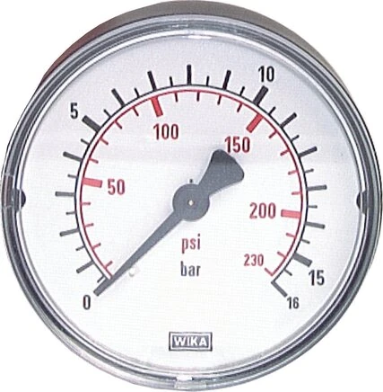

Đồng hồ áp suất WIKA (pressure gauge / manometer) là thiết bị đo áp suất cơ học được dùng phổ biến trong công nghiệp, dầu khí, nhà máy và hệ thống khí nén – thủy lực. Bài viết này giải thích cấu tạo, nguyên lý ống Bourdon, cách phân loại và tiêu chí chọn mua. Fast Group Engineering là đại lý cung cấp hàng chính hãng WIKA (Germany) tại Việt Nam.

Gợi ý chọn nhanh
- Cần đọc áp suất tại chỗ trên máy, bơm, đường ống.
- Cần chọn đường kính mặt, dải đo, ren và vật liệu.
- Cần thay thế đồng hồ WIKA theo nameplate cũ.
- Part number hoặc ảnh nameplate.
- Dải đo, đường kính mặt, kiểu chân và ren kết nối.
- Môi chất, rung động, nhiệt độ và yêu cầu CO/CQ.
- Danh mục đồng hồ áp suất WIKA.
- Bài chọn đường kính mặt và ren.
- Bài cấp chính xác EN 837/Class.
Tóm tắt nhanh (cho bộ phận mua hàng)
- Đồng hồ áp suất WIKA đo áp suất chất lỏng/khí, hiển thị bằng kim cơ khí.
- Nguyên lý phổ biến: ống Bourdon (Bourdon tube); ngoài ra có màng (diaphragm) và hộp lò xo (capsule).
- Chọn đúng cần 4 thông số: dải đo, đường kính mặt (Ø), ren kết nối, cấp chính xác.
- Đường kính phổ biến: 40/50/63/80/100/160 mm; ren G¼, G½, NPT.
- Loại thông dụng: khô, glycerin-filled, safety pattern, contact gauge.

Đồng hồ áp suất WIKA là gì?
Đó là thiết bị chuyển áp suất môi chất thành chuyển vị cơ khí để quay kim chỉ trên mặt số chia độ. Không cần nguồn điện, dễ đọc tại chỗ, độ bền cao — lý do chúng có mặt ở hầu hết hệ thống áp lực công nghiệp. WIKA là nhà sản xuất Đức hàng đầu trong lĩnh vực này, tuân thủ tiêu chuẩn EN 837-1.
Cấu tạo & nguyên lý ống Bourdon
Ống Bourdon là một ống kim loại rỗng, tiết diện dẹt, uốn cong hình chữ C. Khi áp suất đi vào, ống có xu hướng duỗi thẳng ra; chuyển động nhỏ này được khuếch đại qua cơ cấu bánh răng (movement) làm quay kim chỉ (pointer).
| Bộ phận | Chức năng |
|---|---|
| Bourdon tube | Phần tử cảm áp, biến áp suất thành chuyển vị |
| Movement | Bộ bánh răng khuếch đại và truyền chuyển động |
| Pointer + dial | Kim và mặt số chia độ hiển thị giá trị |
| Case | Vỏ (đồng, inox, nhựa); có thể đổ glycerin |
| Connection | Chân ren kết nối vào process (G/NPT) |
Với dải áp thấp, WIKA dùng màng (diaphragm) hoặc hộp lò xo (capsule) thay ống Bourdon để tăng độ nhạy.
Phân loại đồng hồ áp suất WIKA
| Loại | Đặc điểm | Ứng dụng điển hình |
|---|---|---|
| Đồng hồ khô (dry) | Không đổ dầu, giá tốt | Môi trường ổn định, ít rung |
| Glycerin-filled | Đổ dầu glycerin chống rung/xung áp | Bơm, máy nén, thủy lực |
| Safety pattern (S3) | Vách ngăn an toàn, xả áp phía sau | Áp cao, dầu khí, hơi |
| Contact gauge | Có tiếp điểm điều khiển | Cảnh báo/điều khiển theo ngưỡng |
| Fine measurement | Cấp chính xác cao (Ø160) | Phòng thí nghiệm, kiểm định |
Xem bài chi tiết: Đồng hồ dầu glycerin vs đồng hồ khô và Safety pattern gauge theo EN 837-1.
Cấp chính xác (Accuracy Class)
Theo EN 837-1, cấp chính xác thể hiện sai số tối đa theo % thang đo:
| Class | Sai số | Dùng khi |
|---|---|---|
| 2.5 | ±2.5% | Chỉ thị thông thường, khí nén |
| 1.6 | ±1.6% | Công nghiệp phổ biến |
| 1.0 | ±1.0% | Yêu cầu chính xác hơn |
| 0.6 / 0.25 | rất thấp | Kiểm định, phòng lab |
Mẹo chọn: cho áp làm việc nằm ở khoảng 2/3 giữa thang đo để tối ưu độ chính xác và tuổi thọ.
Cách chọn đồng hồ áp suất WIKA (Checklist)
- [ ] Dải đo (bar): áp làm việc ≈ 2/3 thang đo (vd 0-10, 0-16, 0-100 bar).
- [ ] Đường kính mặt (Ø): 63 mm (tủ, panel), 100/160 mm (dễ đọc, chính xác hơn).
- [ ] Ren kết nối: G¼, G½ hoặc NPT; xác định vị trí chân (dưới/sau).
- [ ] Loại: khô / glycerin (rung) / safety (áp cao) / contact (điều khiển).
- [ ] Vật liệu wetted parts: đồng hợp kim hoặc inox 316 cho môi chất ăn mòn.
- [ ] Cấp chính xác: 2.5 / 1.6 / 1.0 theo yêu cầu.
Ứng dụng theo ngành
- Dầu khí (O&G): safety pattern, inox 316, kèm van chặn và siphon.
- Thủy lực – khí nén: glycerin chống rung, Ø63/100.
- HVAC – cấp nước: đồng hồ khô Ø63/100, dải thấp.
- Hơi nóng: kèm ống siphon (Wassersackrohr) bảo vệ đồng hồ.
Đọc ký hiệu trên mặt số & nameplate
Mặt số và vành đồng hồ WIKA in nhiều thông tin hữu ích cho việc chọn đúng mã thay thế: đơn vị áp (bar, kPa, MPa, psi), dải đo, cấp chính xác (in nhỏ dạng "kl. 1.6" hoặc "1.0"), ký hiệu vật liệu wetted và đôi khi mã model. Khi cần đặt lại hàng, chỉ cần chụp rõ mặt số cùng phần chân ren là đủ để tái tạo cấu hình. Đây là cách nhanh nhất để tránh nhầm khi thiết bị cũ đã mờ nhãn.
Vì sao chọn WIKA?
WIKA là nhà sản xuất Đức có lịch sử lâu đời trong đo áp suất và nhiệt độ, với danh mục rộng phủ gần như mọi ứng dụng công nghiệp. Ưu điểm thực tế khi dùng WIKA: dải sản phẩm chuẩn hóa theo EN 837-1 nên dễ tra cứu và thay thế; chất lượng ống Bourdon và cơ cấu ổn định cho tuổi thọ dài; có sẵn các bản đặc thù (safety pattern, màng, chịu hóa chất, chống rung). Với thiết bị đo — nơi độ tin cậy ảnh hưởng trực tiếp tới an toàn — việc chọn thương hiệu chính hãng, có chứng từ CO/CQ, đáng giá hơn khoản chênh nhỏ so với hàng trôi nổi.
Sai lầm thường gặp khi mua
- Chọn thang đo sát áp làm việc: nên để áp làm việc quanh 2/3 thang; chọn quá sát dễ hỏng khi có đỉnh áp.
- Nhầm đơn vị áp: bar, kg/cm², psi, MPa lẫn lộn dẫn tới chọn sai dải.
- Bỏ qua vị trí chân: chân dưới (radial) hay chân sau (axial) quyết định kiểu lắp trên tủ hay đường ống.
- Quên bảo vệ với hơi/nhiệt/rung: thiếu siphon, van chặn hay bản glycerin khiến đồng hồ nhanh hỏng.
- Sai vật liệu wetted: dùng đồng hợp kim cho môi chất ăn mòn thay vì inox 316.
FAQ
Đồng hồ WIKA Ø63 và Ø100 khác gì nhau? Ø100/160 dễ đọc và thường có cấp chính xác tốt hơn; Ø63 gọn cho panel/tủ.
Ren G¼ và G½ chọn loại nào? Theo kết nối process sẵn có; G¼ phổ biến cho Ø63, G½ cho Ø100/160.
Khi nào cần loại glycerin? Khi có rung động hoặc xung áp (bơm, máy nén) — dầu glycerin giảm dao động kim.
WIKA có đo chân không không? Có, dải như -1…0 bar hoặc dải kết hợp áp/chân không.
Đồng hồ áp suất có cần hiệu chuẩn định kỳ không?
Có. Với điểm đo quan trọng hoặc theo yêu cầu chất lượng, nên hiệu chuẩn định kỳ và có thể kèm chứng chỉ hiệu chuẩn khi đặt hàng.
Cần tư vấn chọn hoặc báo giá đồng hồ áp suất WIKA?
Gửi dải đo, Ø mặt, ren và số lượng — hoặc ảnh nameplate — để nhận báo giá trong 24h.
- Email: minhduc@fastgroup.vn · Zalo: (+84) 938 888 958
Fast Group Engineering – đại lý cung cấp hàng chính hãng WIKA (Germany) tại Việt Nam.
Bài liên quan: [Glycerin vs đồng hồ khô] · [Safety pattern gauge EN 837-1] · [Cấp chính xác đồng hồ áp suất] · [Contact pressure gauge] · [Chọn Ø mặt & ren]